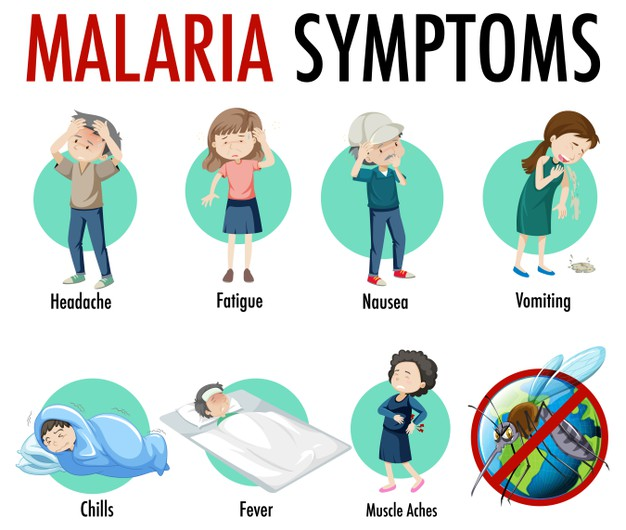

Do you want to proceed with record.
Diagnosis
To diagnose malaria, your doctor will likely review your medical history and recent travel, conduct a physical exam, and order blood tests. Blood tests can indicate:
- The presence of the parasite in the blood, to confirm that you have malaria
- Which type of malaria parasite is causing your symptoms
- If your infection is caused by a parasite resistant to certain drugs
- Whether the disease is causing any serious complications
Depending on your symptoms, your doctor may order additional diagnostic tests to assess possible complications. 
Treatment
Malaria is treated with prescription drugs to kill the parasite. The types of drugs and the length of treatment will vary, depending on:
- Which type of malaria parasite you have
- The severity of your symptoms
- Your age
- Whether you're pregnant
Medication
The most common antimalarial drugs include:
- Chloroquine phosphate. Chloroquine is the preferred treatment for any parasite that is sensitive to the drug.
But in many parts of the world, parasites are resistant to chloroquine, and the drug is no longer an effective treatment. - Artemisinin-based combination therapies (ACTs). ACT is a combination of two or more drugs that work against the malaria parasite in different ways.
This is usually the preferred treatment for chloroquine-resistant malaria.
Examples include artemether-lumefantrine (Coartem) and artesunate-mefloquine.
Other common antimalarial drugs include:
- Atovaquone-proguanil (Malarone)
- Quinine sulfate (Qualaquin) with doxycycline (Oracea, Vibramycin, others)
- Primaquine phosphate
To read more about malaria please visit the following links